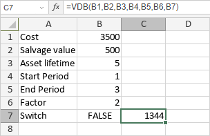

VDB funkcija
Funkcija VDB je jedna od finansijskih funkcija. Koristi se za izračunavanje amortizacije sredstva za određeni ili delimični računovodstveni period koristeći metodu varijabilnog opadajućeg salda.
Sintaksa
VDB(cost, salvage, life, start_period, end_period, [factor], [no_switch])
Funkcija VDB ima sledeće argumente:
| Argument | Opis |
|---|---|
| cost | Trošak sredstva. |
| salvage | Vrednost sredstva na kraju njegovog životnog veka. |
| life | Ukupan broj perioda u životnom veku sredstva. |
| start_period | Početni period za koji želite da izračunate amortizaciju. Vrednost mora biti izražena u istim jedinicama kao life. |
| end_period | Krajnji period za koji želite da izračunate amortizaciju. Vrednost mora biti izražena u istim jedinicama kao life. |
| factor | Stopa po kojoj saldo opada. Ovo je opcioni argument. Ako je izostavljen, funkcija pretpostavlja da je factor 2. |
| no_switch | Opcioni argument koji određuje da li koristiti linearnu amortizaciju kada je amortizacija veća od izračunate opadajuće metode. Ako je FALSE ili izostavljen, funkcija koristi linearnu amortizaciju. Ako je TRUE, funkcija koristi opadajuću metodu. |
Napomene
Sve numeričke vrednosti moraju biti pozitivne.
Kako primeniti funkciju VDB.
Primeri
Slika ispod prikazuje rezultat koji vraća funkcija VDB.
